특수용접기능사 (2015-07-19 기출문제)
1과목: 용접일반
1. CO2용접에서 발생되는 일산화탄소와 산소 등의 가스를 제거하기 위해 사용되는 탈산제는?
- Mn
- Ni
- W
- Cu
(정답률: 77%)

2. 용접부의 균열 발생의 원인 중 틀린 것은?
- 이음의 강성이 큰 경우
- 부적당한 용접 봉 사용시
- 용접부의 서냉
- 용접전류 및 속도 과대
(정답률: 74%)
3. 다음 중 플라즈마 아크용접의 장점이 아닌 것은?
- 용접속도가 빠르다.
- 1층으로 용접할 수 있으므로 능률적이다.
- 무부하 전압이 높다.
- 각종 재료의 용접이 가능하다.
(정답률: 70%)
4. MIG 용접 시 와이어 송급방식의 종류가 아닌 것은?
- 풀(pull)방식
- 푸시(push)방식
- 푸시언더(push-under)방식
- 푸시풀(push-pull)방식
(정답률: 89%)
5. 다음 용접 이음부 중에서 냉각속도가 가장 빠른 이음은?
- 맞대기 이음
- 변두리 이음
- 모서리 이음
- 필릿 이음
(정답률: 64%)
6. CO2용접시 저전류 영역에서의 가스유량으로 가장 적당한 것은?
- 5~10 ℓ/min
- 10~15 ℓ/min
- 15~20 ℓ/min
- 20~25 ℓ/min
(정답률: 74%)
7. 비소모성 전극봉을 사용하는 용접법은?
- MIG 용접
- TIG 용접
- 피복아크 용접
- 서브머지드 아크용접
(정답률: 73%)
8. 용접부 비파괴 검사법인 초음파 탐상법의 종류가 아닌 것은?
- 투과법
- 펄스 반사법
- 형광 탐상법
- 공진법
(정답률: 73%)
9. 공기보다 약간 무거우며 무색, 무미, 무취의 독성이 없는 불활성가스로 용접부의 보호 능력이 우수한 가스는?
- 아르곤
- 질소
- 산소
- 수소
(정답률: 79%)
10. 예열 방법 중 국부 예열의 가열 범위는 용접선 양쪽에 몇 mm 정도로 하는 것이 가장 적합한가?
- 0 ~ 50 mm
- 50 ~ 100 mm
- 100 ~ 150 mm
- 150 ~ 200 mm
(정답률: 63%)
11. 인장강도가 750 MPa인 용접 구조물의 안전율은? (단, 허용응력은 250MPa이다.)
- 3
- 5
- 8
- 12
(정답률: 74%)
12. 용접부의 결함은 치수상 결함, 구조상 결함, 성질상 결함으로 구분된다. 구조상 결함들로만 구성된 것은?
- 기공, 변형, 치수불량
- 기공, 용입불량, 용접균열
- 언더컷, 연성부족, 표면결함
- 표면결함, 내식성 불량, 융합불량
(정답률: 72%)
13. 다음 중 연납땜(Sn+Pb)의 최저 용융 온도는 몇 ℃인가?
- 327 ℃
- 250 ℃
- 232 ℃
- 183 ℃
(정답률: 50%)
14. 레이저 용접의 특징으로 틀린 것은?
- 루비 레이저와 가스 레이저의 두 종류가 있다.
- 광선이 용접의 열원이다.
- 열 영향 범위가 넓다.
- 가스 레이저로는 주로 CO2가스 레이저가 사용된다.
(정답률: 74%)
15. 용접부의 연성 결함을 조사하기 위하여 사용되는 시험은?
- 인장시험
- 경도시험
- 피로시험
- 굽힘시험
(정답률: 72%)
16. 용융 슬래그와 용융금속이 용접부로부터 유출되지 않게 모재의 양측에 수랭식 동판을 대어 용융 슬래그 속에서 전극 와이어를 연속적으로 공급하여 주로 용융 슬래그의 저항열로 와이어와 모재 용접부를 용융시키는 것으로 연속 주조형식의 단층용접법은?
- 일렉트로 슬래그 용접
- 논 가스 아크용접
- 그래비트 용접
- 테르밋 용접
(정답률: 77%)
17. 맴돌이 전류를 이용하여 용접부를 비파괴 검사하는 방법으로 옳은 것은?
- 자분 탐상 검사
- 와류 탐상 검사
- 침투 탐상 검사
- 초음파 탐상 검사
(정답률: 67%)
18. 화재 및 폭발의 방지 조치로 틀린 것은?
- 대기 중에 가연성 가스를 방출시키지 말 것
- 필요한 곳에 화재 진화를 위한 방화설비를 설치할 것
- 배관에서 가연성 증기의 누출 여부를 철저히 점검할 것
- 용접작업 부근에 점화원을 둘 것
(정답률: 88%)
19. 연납땜의 용제가 아닌 것은?
- 붕산
- 염화아연
- 인산
- 염화암모늄
(정답률: 64%)
20. 점용접에서 용접점이 앵글재와 같이 용접위치가 나쁠 때, 보통 팁으로는 용접이 어려운 경우에 사용하는 전극의 종류는?
- P형 팁
- E형 팁
- R형 팁
- F형 팁
(정답률: 53%)
21. 용접작업의 경비를 절감시키기 위한 유의사항으로 틀린 것은?
- 용접봉의 적절한 선정
- 용접사의 작업 능률의 향상
- 용접지그를 사용하여 위보기 자세의 시공
- 고정구를 사용하여 능률 향상
(정답률: 82%)
22. 다음 중 표준 홈 용접에 있어 한쪽에서 용접으로 완전 용입을 얻고자 할 때 V형 홈이음의 판 두께로 가장 적합한 것은?
- 1 ~ 10 mm
- 5 ~ 15 mm
- 20 ~ 30 mm
- 35 ~ 50 mm
(정답률: 62%)
23. 프로판(C3H8)의 성질을 설명한 것으로 틀린 것은?
- 상온에서 기체 상태이다.
- 쉽게 기화하며 발열량이 높다.
- 액화하기 쉽고 용기에 넣어 수송이 편리하다.
- 온도변화에 따른 팽창률이 작다.
(정답률: 66%)
24. 다음 중 용접기의 특성에 있어 수하특성의 역할로 가장 적합한 것은?
- 열량의 증가
- 아크의 안정
- 아크전압의 상승
- 개로전압의 증가
(정답률: 68%)
25. 용접기의 사용률이 40% 일 때, 아크 발생 시간과 휴식시간의 합이 10분이면 아크 발생 시간은?
- 2분
- 4분
- 6분
- 8분
(정답률: 83%)
26. 다음 중 가스 용접에서 용제를 사용하는 주된 이유로 적합하지 않은 것은?
- 재료표면의 산화물을 제거한다.
- 용융금속의 산화·질화를 감소하게 한다.
- 청정작용으로 용착을 돕는다.
- 용접봉 심선의 유해성분을 제거한다.
(정답률: 54%)
27. 교류 아크 용접기 종류 중 코일의 감긴 수에 따라 전류를 조정하는 것은?
- 탭전환형
- 가동철심형
- 가동코일형
- 가포화 리액터형
(정답률: 47%)
28. 피복아크 용접에서 아크 쏠림 방지대책이 아닌 것은?
- 접지점을 될 수 있는 대로 용접부에서 멀리 할 것
- 용접봉 끝을 아크쏠림 방향으로 기울일 것
- 접지점 2개를 연결할 것
- 직류용접으로 하지 말고 교류용접으로 할 것
(정답률: 75%)
29. 다음 중 피복제의 역할이 아닌 것은?
- 스패터의 발생을 많게 한다.
- 중성 또는 환원성 분위기를 만들어 질화, 산화 등의 해를 방지한다.
- 용착금속의 탈산 정련 작용을 한다.
- 아크를 안정하게 한다.
(정답률: 85%)
30. 용접봉을 여러 가지 방법으로 움직여 비드를 형성하는 것을 운봉법이라 하는데, 위빙비드 운봉 폭은 심선지름의 몇 배가 적당한가?
- 0.5 ~ 1.5배
- 2 ~ 3배
- 4 ~ 5배
- 6 ~ 7배
(정답률: 83%)
31. 수중절단 작업시 절단 산소의 압력은 공기 중에서의 몇 배 정도로 하는가?
- 1.5 ~ 2배
- 3 ~ 4배
- 5 ~ 6배
- 8 ~ 10배
(정답률: 55%)
32. 산소병의 내용적이 40.7 리터인 용기에 압력이 100 kgf/㎠로 충전되어 있다면 프랑스식 팁 100번을 사용하여 표준불꽃으로 약 몇 시간까지 용접이 가능한가?
- 16시간
- 22시간
- 31시간
- 41시간
(정답률: 69%)
33. 가스용접 토치 취급상 주의 사항이 아닌 것은?
- 토치를 망치나 갈고리 대용으로 사용하여서는 안 된다.
- 점화되어있는 토치를 아무 곳에나 함부로 방치하지 않는다.
- 팁 및 토치를 작업장 바닥이나 흙 속에 함부로 방치하지 않는다.
- 작업 중 역류나 역화 발생시 산소의 압력을 높여서 예방한다.
(정답률: 91%)
34. 용접기의 특성 중 부하전류가 증가하면 단자전압이 저하되는 특성은?
- 수하 특성
- 동전류 특성
- 정전압 특성
- 상승 특성
(정답률: 73%)
35. 다음 중 가스 절단시 예열 불꽃이 강할 때 생기는 현상이 아닌 것은?
- 드래그가 증가한다.
- 절단면이 거칠어진다.
- 모서리가 용융되어 둥글게 된다.
- 슬래그 중의 철 성분의 박리가 어려워진다.
(정답률: 56%)
2과목: 용접재료
36. 보기와 같이 연강용 피복아크 용접봉을 표시하였다. 설명으로 틀린 것은?(오류 신고가 접수된 문제입니다. 반드시 정답과 해설을 확인하시기 바랍니다.)
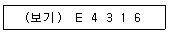
- E : 전기 용접봉
- 43 : 용착 금속의 최저 인장강도
- 16 : 피복제의 계통 표시
- E4316 : 일미나이트계
(정답률: 84%)
37. 가스 절단에서 고속 분출을 얻는데 가장 적합한 다이버전트 노즐은 보통의 팁에 비하여 산소소비량이 같을 때 절단 속도를 몇 % 정도 증가시킬 수 있는가?
- 5 ~ 10 %
- 10 ~ 15 %
- 20 ~ 25 %
- 30 ~ 35 %
(정답률: 53%)
38. 직류아크 용접에서 정극성(DCSP)에 대한 설명으로 옳은 것은?
- 용접봉의 녹음이 느리다.
- 용입이 얕다.
- 비드 폭이 넓다.
- 모재를 음극(-)에 용접봉을 양극(+)에 연결한다.
(정답률: 66%)
39. 게이지용 강이 갖추어야 할 성질에 대한 설명 중 틀린 것은?
- HRC 55 이하의 경도를 가져야 한다.
- 팽창계수가 보통 강보다 작아야 한다.
- 시간이 지남에 따라 치수변화가 없어야 한다.
- 담금질에 의하여 변형이나 담금질 균열이 없어야 한다.
(정답률: 66%)
40. 알루미늄에 대한 설명으로 옳지 않은 것은?
- 비중이 2.7로 낮다.
- 용융점은 1067℃ 이다.
- 전기 및 열전도율이 우수하다.
- 고강도 합금으로 두랄루민이 있다.
(정답률: 72%)
41. 강의 표면 경화 방법 중 화학적 방법이 아닌 것은?
- 침탄법
- 질화법
- 침탄 질화법
- 화염 경화법
(정답률: 72%)
42. 황동 합금 중에서 강도는 낮으나 전연성이 좋고 금색에 가까워 모조금이나 판 및 선에 사용되는 합금은?
- 톰백(tombac)
- 7-3 황동(cartridge brass)
- 6-4 황동(muntz metal)
- 주석 황동(tin brass)
(정답률: 66%)
43. 다음 중 비중이 가장 작은 것은?
- 청동
- 주철
- 탄소강
- 알루미늄
(정답률: 70%)
44. 냉간가공 후 재료의 기계적 성질을 설명한 것 중 옳은 것은?
- 항복강도가 감소한다.
- 인장강도가 감소한다.
- 경도가 감소한다.
- 연신율이 감소한다.
(정답률: 56%)
45. 금속간 화합물에 대한 설명으로 옳은 것은?
- 자유도가 5인 상태의 물질이다.
- 금속과 비금속사이의 혼합 물질이다.
- 금속이 공기 중의 산소와 화합하여 부식이 일어난 물질이다.
- 두 가지 이상의 금속 원소가 간단한 원자비로 결합되어 있으며, 원래 원소와는 전혀 다른 성질을 갖는 물질이다.
(정답률: 69%)
46. 물과 얼음의 상태도에서 자유도가 “0(zero)”일 경우 몇 개의 상이 공존 하는가?
- 0
- 1
- 2
- 3
(정답률: 47%)
47. 변태 초소성의 조건과 원칙에 대한 설명 중 틀린 것은?
- 재료에 변태가 있어야 한다.
- 변태 진행 중에 작은 하중에도 변태 초소성이 된다.
- 감도지수(m)의 값은 거의 0(zerom)의 값을 갖는다.
- 한 번의 열사이클로 상당한 초소성 변형이 발생한다.
(정답률: 48%)
48. Mg-희토류계 합금에서 희토류원소를 첨가할 때 미시메탈(Micsh-metal)의 형태로 첨가한다. 미시메탈에서 세륨(Ce)을 제외한 합금 원소를 첨가한 합금의 명칭은?
- 탈타뮴
- 디디뮴
- 오스뮴
- 갈바늄
(정답률: 49%)
49. 인장 시험에서 변형량을 원표점 거리에 대한 백분율로 표시한 것은?
- 연신율
- 항복점
- 인장 강도
- 단면 수축률
(정답률: 65%)
50. 강에 인(P)이 많이 함유되면 나타나는 결함은?
- 적열메짐
- 연화메짐
- 저온메짐
- 고온메짐
(정답률: 54%)
3과목: 기계제도
51. 화살표가 가리키는 용접부의 반대쪽 이음의 위치로 옳은 것은?
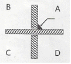
- A
- B
- C
- D
(정답률: 70%)
52. 재료기호에 대한 설명 중 틀린 것은?
- SS 400은 일반 구조용 압연 강재이다.
- SS 400의 400은 최고 인장 강도를 의미한다.
- SM 45C는 기계 구조용 탄소 강재이다.
- SM 45C의 45C는 탄소 함유량을 의미한다.
(정답률: 68%)
53. 보기 입체도의 화살표 방향이 정면일 때 평면도로 적합한 것은?
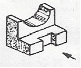
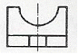
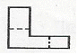
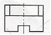
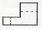
(정답률: 77%)
54. 보조 투상도의 설명으로 가장 적함한 것은?
- 물체의 경사면을 실제 모양으로 나타낸 것
- 특수한 부분을 부분적으로 나타낸 것
- 물체를 가상해서 나타낸 것
- 물체를 90° 회전시켜서 나타낸 것
(정답률: 41%)
55. 용접부의 보조기호에서 제거 가능한 이면 판재를 사용하는 경우의 표시 기호는?
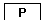
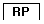
(정답률: 81%)
56. 다음 그림과 같이 상하면의 절단된 경사각이 서로 다른 원통의 전개도 형상으로 가장 적합한 것은?
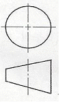
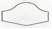
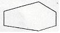
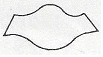
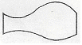
(정답률: 60%)
57. 기계나 장치 등의 실체를 보고 프리핸드(freehand)로 그린 도면은?
- 배치도
- 기초도
- 조립도
- 스케치도
(정답률: 85%)
58. 도면에서 2종류 이상의 선이 겹쳤을 때, 우선하는 순위를 바르게 나타낸 것은?
- 숨은선>절단선>중심선
- 중심선>숨은선>절단선
- 절단선>중심선>숨은선
- 무게 중심선>숨은선>절단선
(정답률: 61%)
59. 관용 테이퍼 나사 중 평행 암나사를 표시하는 기호는? (단, ISO 표준에 있는 기호로 한다.)
- G
- R
- Rc
- Rp
(정답률: 45%)
60. 현의 치수 기입 방법으로 옳은 것은?
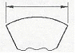
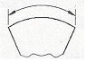
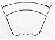
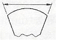
(정답률: 68%)